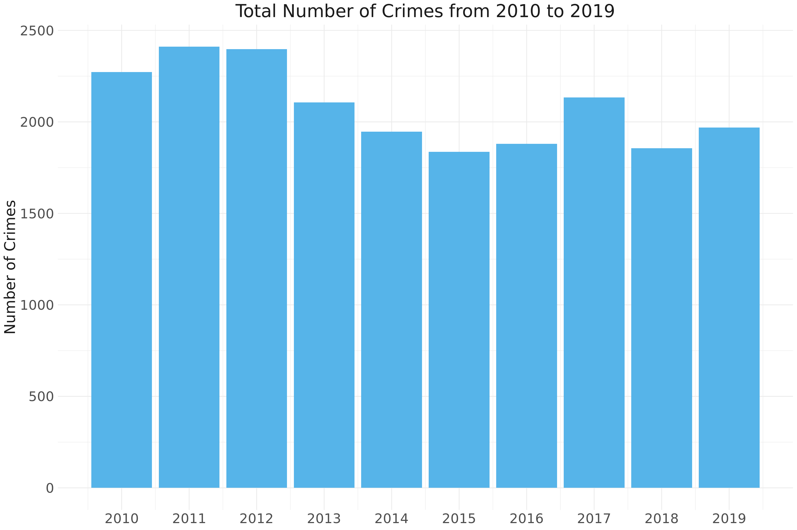
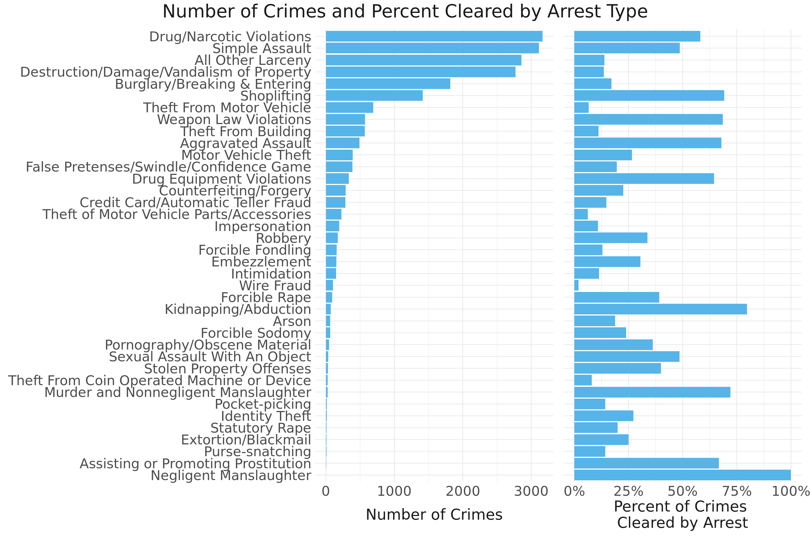
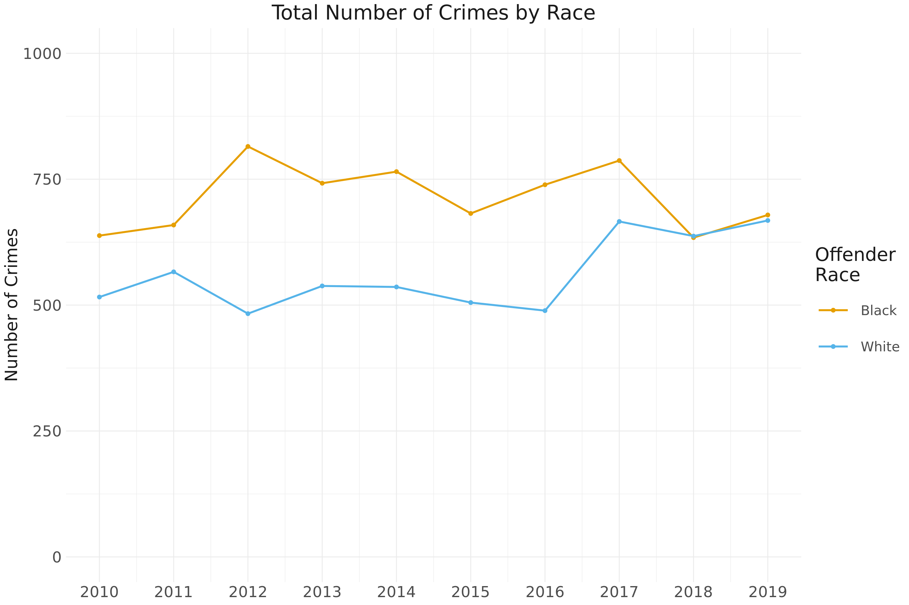
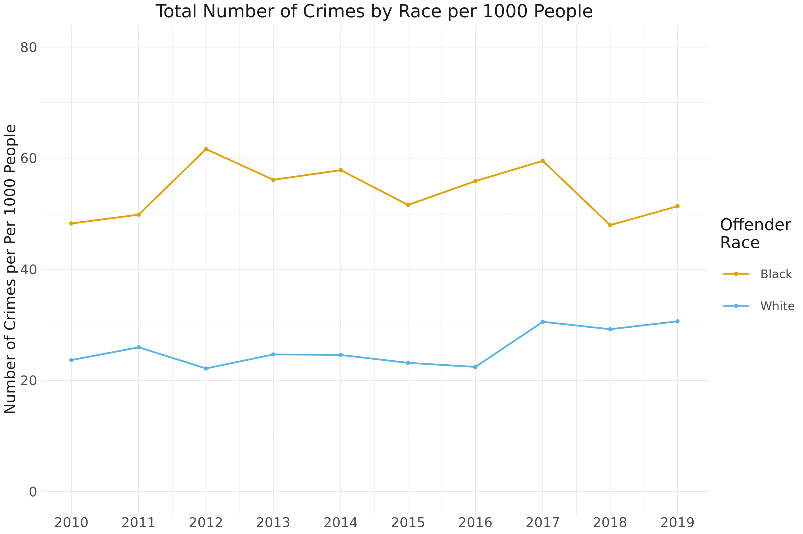
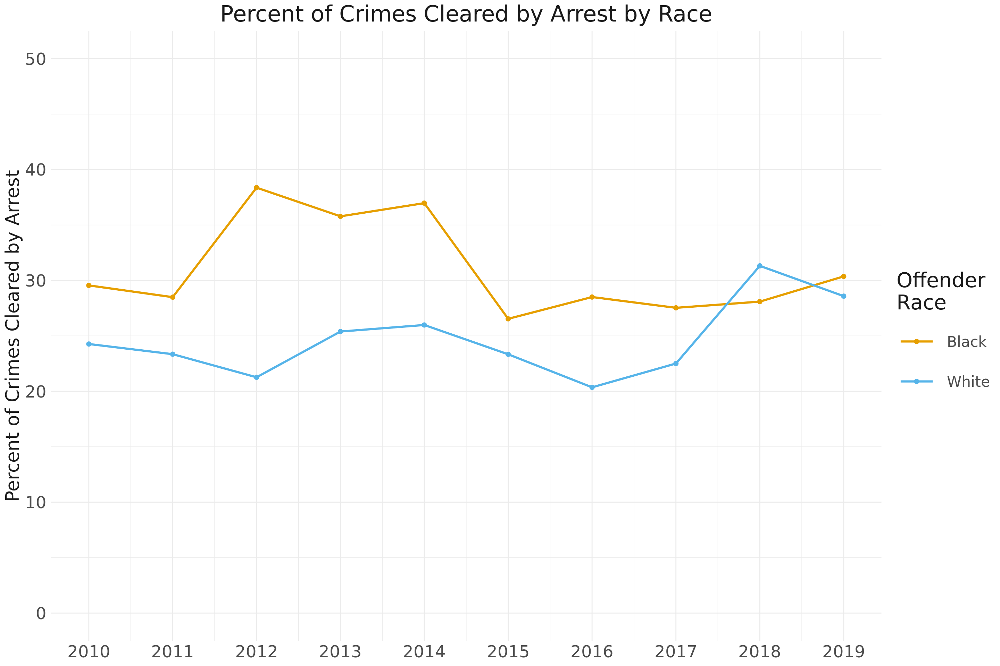
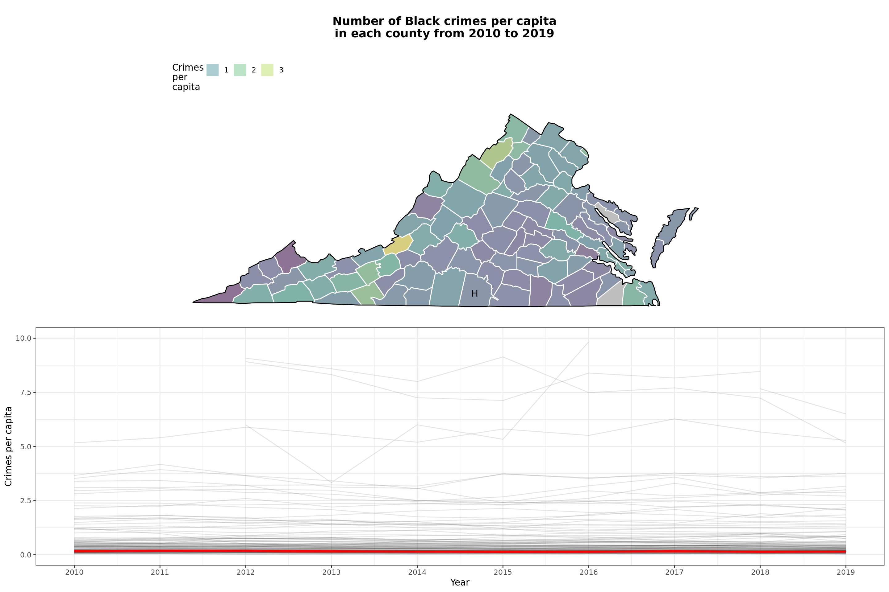
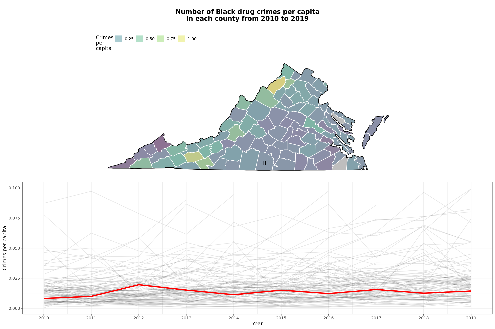
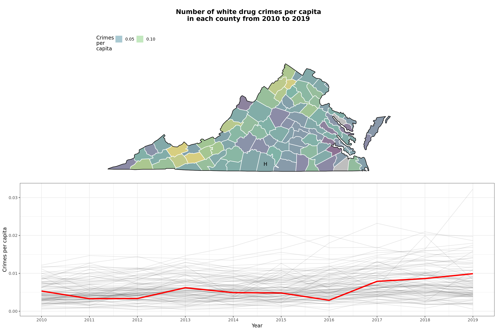

Background
Crime, arrest, and incarceration are related but distinct concepts. Crimes occur when individuals break the law, but not all crimes come to the attention of law enforcement. Of the crimes that do come to the attention of law enforcement, some are diverted from formal proceedings and others result in arrest. Again, not all arrests result in incarceration. The below figure from the Prison Fellowship highlights how the process from arrest to incarceration makes it difficult to compare the rates of crime, arrests, and incarceration directly.
Individuals who are incarcerated may be placed in a jail or prison. Jails hold individuals who are awaiting trial or who have been sentenced to less than year of incarceration. Prisons hold individuals who have been convicted and sentenced to more than year of incarceration. Although there are some differences across states, jails are generally locally operated, and prisons are operated by state or federal governments 1.
Research has mostly focused on men incarcerated in prisons in urban areas, but rural counties have seen a growth in the use of local jails2, particularly to incarcerate women. In fact, rural areas with populations between 10,000 and 50,000, such as Halifax County, have the highest rates of pre-trial detention3.
Given that crime, arrests, and incarceration represent different parts of the criminal justice system, we provide an overview of each in Halifax County. Specifically, we investigate trends in crime over time, common offense types, crime rates by race, and the percent of crimes cleared by arrest. Then, we investigate the incarceration rate with a focus on male and female incarceration rates as well as jails and prisons incarceration rate over time.
Overall crime trends over time

Most common offense types and clearance rates

Crime trends by race (total and per capita)

Clearance rates by race

Comparison of Halifax county to other VA counties
All crimes

Black crimes

White crimes

All drug crimes

Black drug crimes

White drug crimes

Bureau of Justice Statistics (n.d.). FAQ detail. Retrieved from: https://www.bjs.gov/index.cfm?ty=qa&iid=322↩
Vera Institute of Justice (n.d.). Rural jails research and policy network. Retrieved from: https://www.vera.org/projects/rural-jails-research-and-policy-network/learn-more↩
McCoy, E.F. & Russo, M. (2018). Implementing alternatives to incarceration for women in rural communities.↩